專為 SF6 打造的免費開源透明疊層工具。即時顯示搓招軌跡、縮圈節奏、5 階判定與搓招診斷，內建線上連段庫與一鍵自動更新。
針對 SF6 實戰手感持續打磨，從新手入門到高階連段練習都適用。
支援 osu! 動態展開譜面（預設）、固定鍵位與聚焦模式；可自由調整 AR 縮圈速度、按鈕大小、透明度（100% 實心）與自訂打擊音效。
提供 PERFECT / GOOD / OK / LATE / MISS 五階判定；指令沒轉乾淨時（例如 236P 漏按 6）會直接提示實際輸入，快速抓出失誤原因。
完整支援經典與現代模式，鍵盤、Xbox / XInput 手把、DirectInput、Hitbox 與大搖皆可即插即用，並支援 1P / 2P 左右側鏡像切換。
F7 直式指令表內建 SF6 拳頭／腳圖示與 L/M/H 角標；按 F9 即可用滑鼠拖曳所有區塊位置並自動記憶，附一鍵重置。
免登入即可依角色、難度、角落或人氣排行下載連段，支援連段編號搜尋；登入 Discord 即可上傳分享自己錄製的連段。
安裝 Setup.exe 後，每次啟動自動檢查最新版，有更新時在程式內一鍵完成升級，不必每次重新手動下載。
依照你的習慣自由選擇最適合的譜面顯示方式。
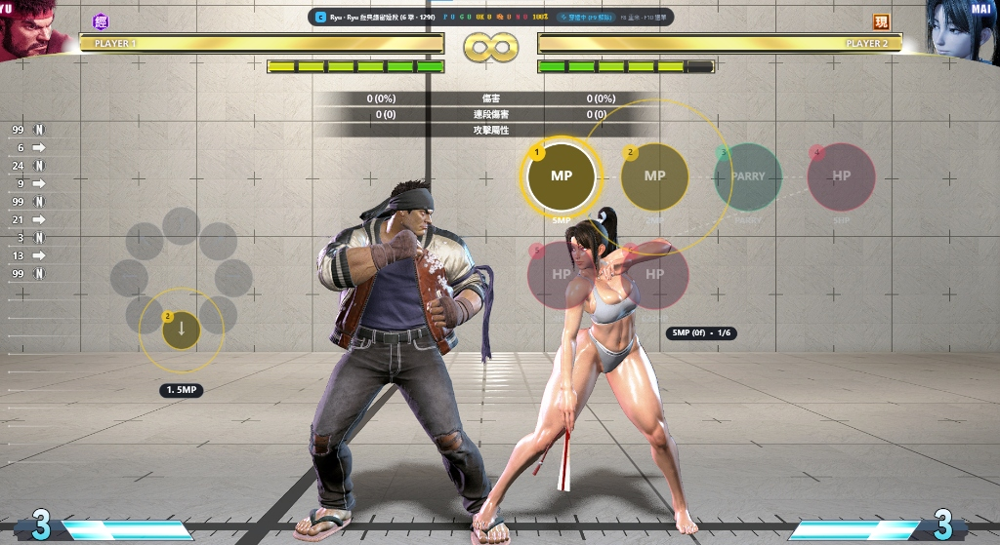
左側固定 8 向羅盤與搓招軌跡，右側以 4×4 格順序展開後續所有攻擊鍵並附縮圈與導引虛線，長連段也能一眼看穿節奏。
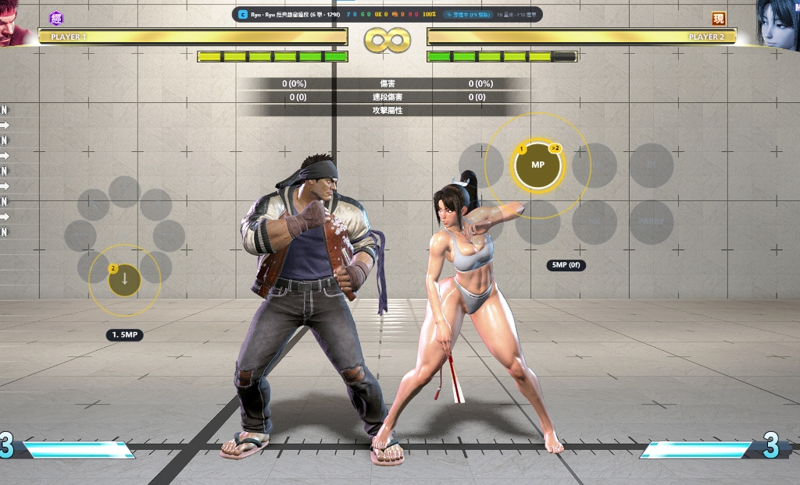
右側依大搖／Hitbox 真實六鍵（LP/MP/HP、LK/MK/HK）固定排布，適合想直接建立手指肌肉記憶的玩家。
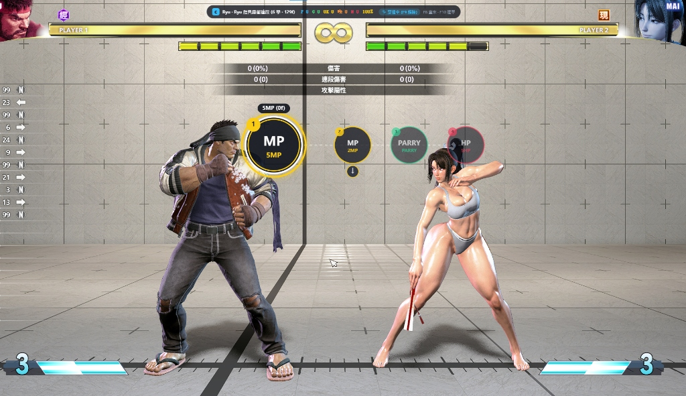
畫面中央只放大顯示「當前招式」與右側緊接的下一招預告，視線最集中、畫面遮擋最少。
從啟動、選曲到錄製分享，六個步驟快速上手 FBT。
啟動 FBT 後先選擇要練習的遊戲；程式每次啟動都會檢查新版本，有更新時頂端會顯示進度條並自動升級。
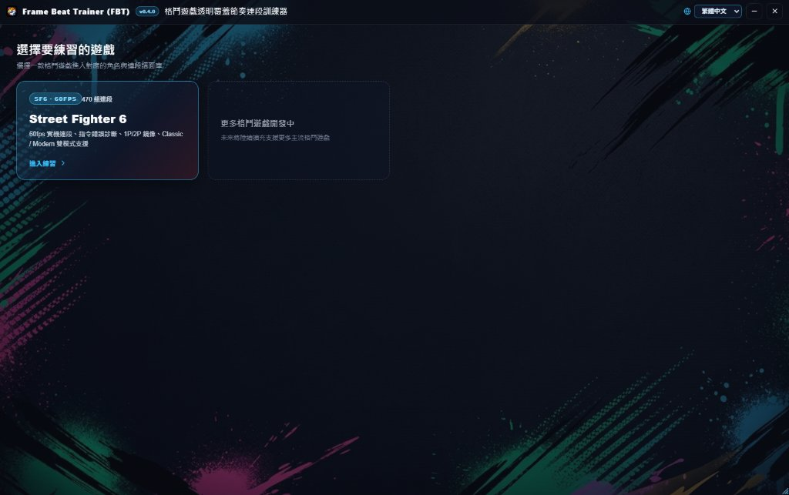
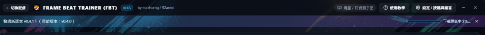
左側選操作模式（Classic / Modern）與角色，右側瀏覽連段並依難度、位置篩選；也可打開線上連段庫下載其他玩家分享的連段，或輸入 oc-xxxx 編號。
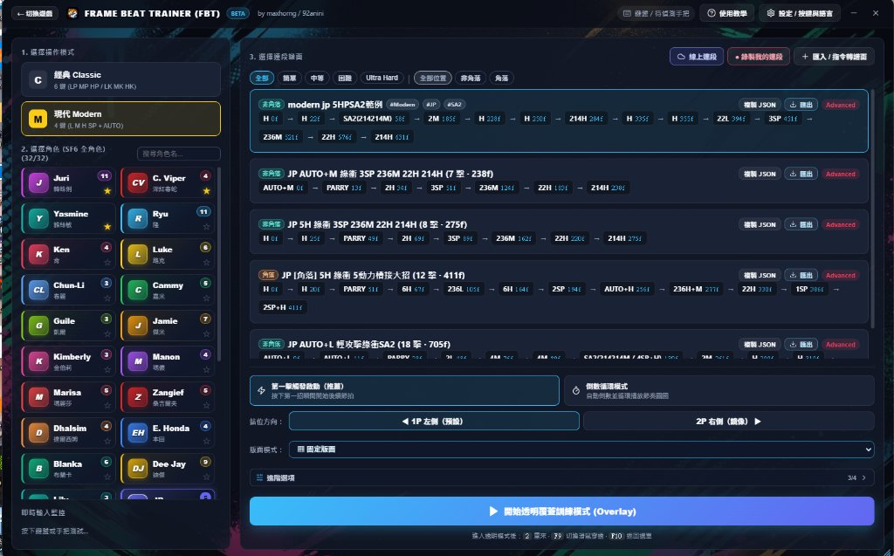
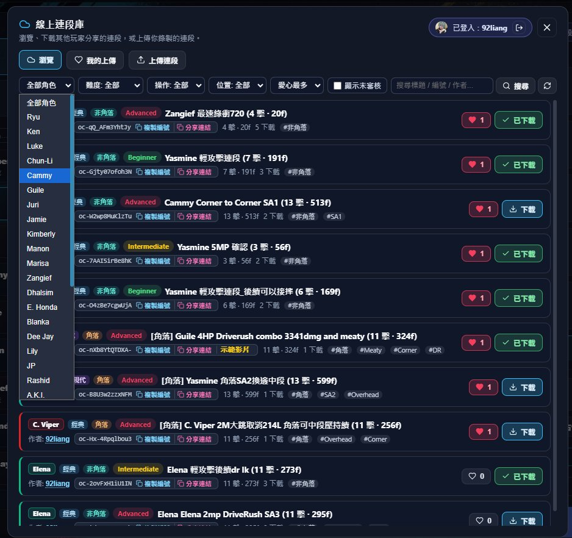
為每個動作綁定鍵盤與手把按鈕，並可調整縮圈速度（AR）、按鈕大小、疊層透明度與打擊音效。
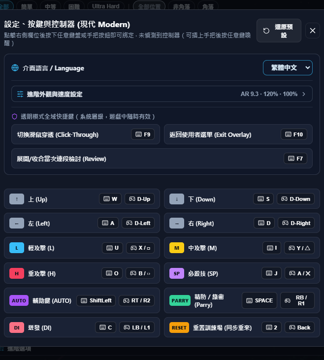
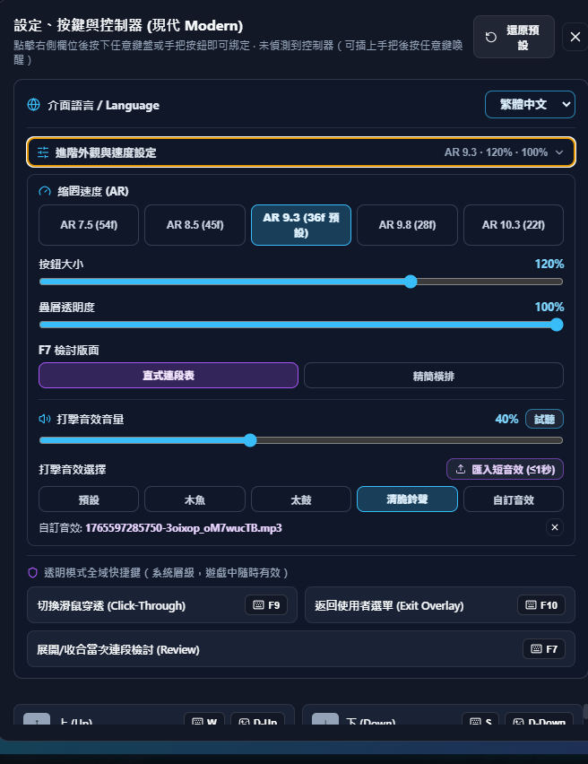
開始前選擇版面模式與進階選項，按下開始後透明疊層會覆蓋在 SF6 上，左側看方向搓招軌跡、右側跟著縮圈節奏按鍵。
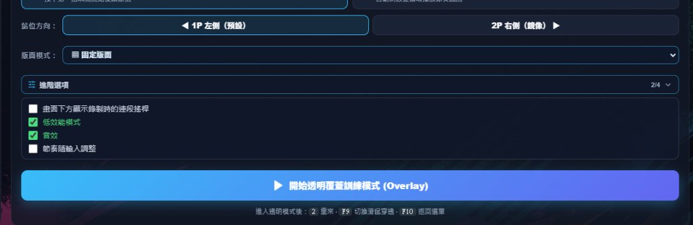
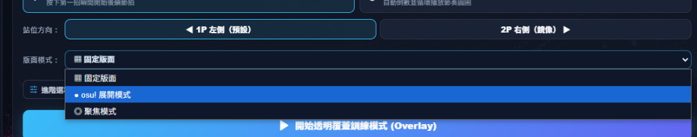
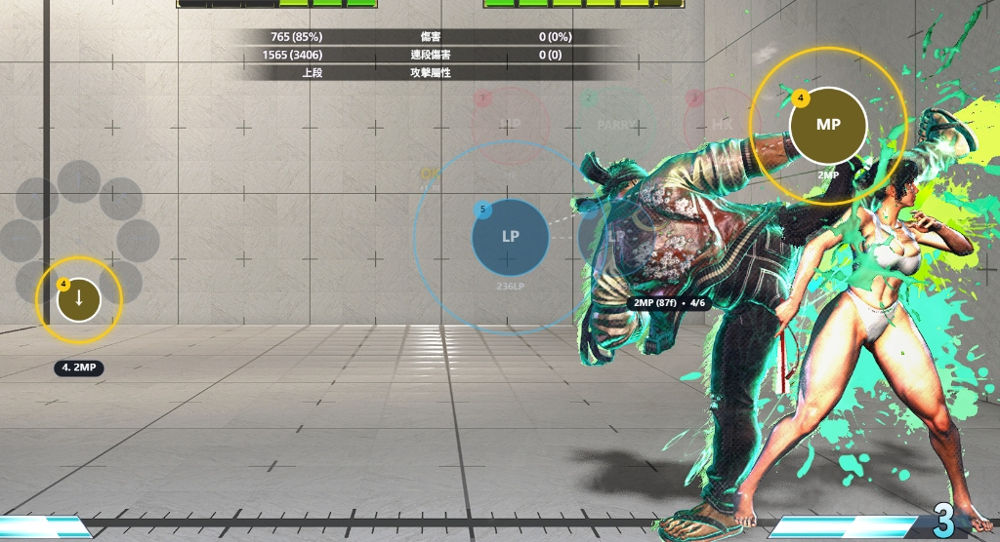
按 F7 開關檢討面板，逐步顯示每一招的判定。失誤時會指出哪一步、差幾格；全部命中則顯示 PERFECT。
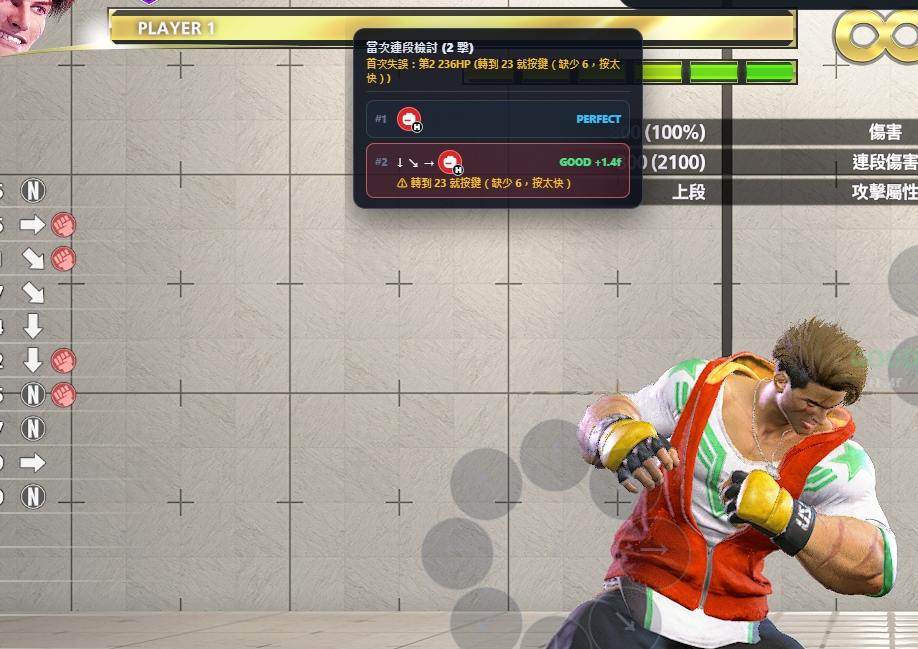
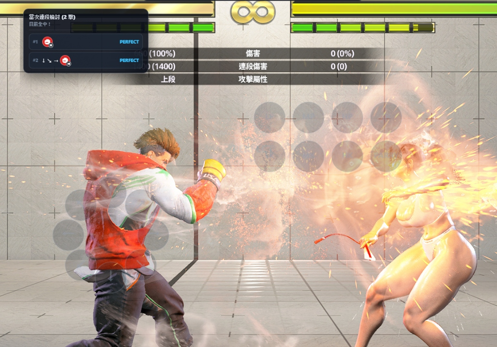
在訓練場錄下精準的逐幀輸入，登入 Discord 即可上傳至線上連段庫，取得分享編號給朋友。
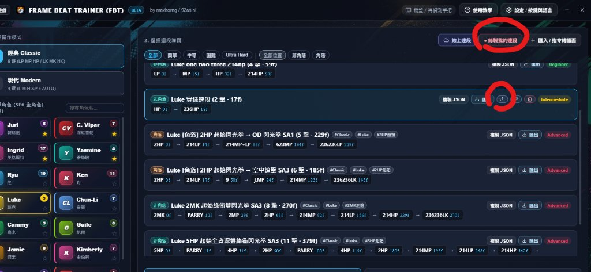
完整示範安裝設定、按鍵綁定與實戰練段流程。
YouTube 教學影片區塊（已預留）
影片上傳後，只要把下方 YOUTUBE_VIDEO_ID 填入你的影片 ID 就會自動嵌入播放！
const YOUTUBE_VIDEO_ID = '';